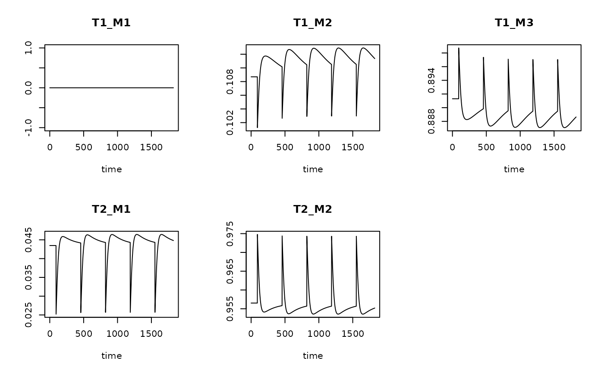
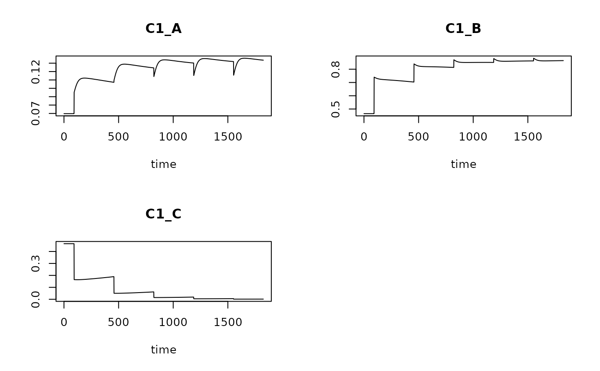
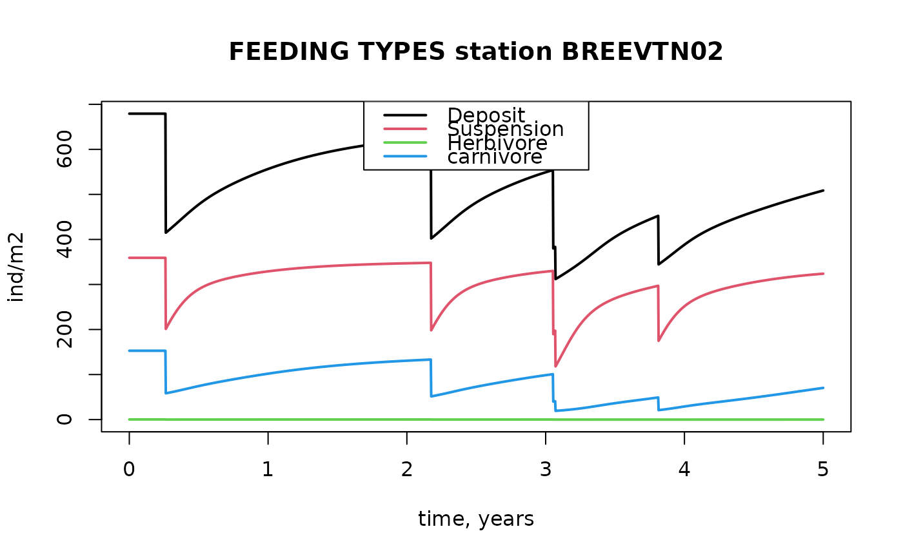

Functions to estimate the impact of bottom disturbances on benthic taxa. Allows for non-regularly spaced events.
trawlingfun.Rdrun_perturb applies a logistic model to estimate the depletion and recovery of benthic taxa from (a sequence of) bottom disturbing (e.g. trawling) events. Fishing can be implemented by specifiying the perturbation events.
run_logistic applies a logistic model with constant mortality.
Usage
run_perturb (parms, times, sar = 1,
tstart_perturb = min(times) + 0.5/sar, tend_perturb = max(times),
events = NULL, taxon_names = parms[["taxon"]],
D0 = parms[["K"]], addsum = FALSE, verbose = FALSE)
run_logistic(parms, times,
tstart_perturb = min(times), tend_perturb=max(times),
taxon_names = parms[["taxon"]],
D0 = parms[["K"]], addsum = FALSE, verbose = FALSE)Arguments
- parms
a vector, list, or data.frame with logistic parameters: for the function
run_perturb, the parameters should ber(the rate of increase),K(carrying capacity), andd, the depletion factor during the event. For functionrun_logistic, it should contain either the parametersr, Kandm, the constant mortality rate, or the parametersK, r, sar, andd, In the latter case, the parametermwill be estimated based onsar, and d.- taxon_names
a vector with names of the taxa whose characteristics are present in
parms. Should be of the same length as (the number of rows of)parms. When not present orNULL, the taxa in the output will be labeled"tax_1","tax_2", etc.- sar
fishing intensity, estimated as Swept Area Ratio, units e.g. [m2/m2/year], one number. Only used when
eventsisNULL.- times
a vector with the output times of the model (sorted). The units of times should be consistent with the unit of parameter
r; i.e. ifris expressed per year (1/y), then the time unit will be years.- tstart_perturb, tend_perturb
time at which the perturbation starts and stops - before tstart_perturb and after tend_perturb, no events will occur (
run_perturb) or the mortality parameter will be set = 0 (run_logistic.- events
If not
NULL, a vector with the times at which the disturbing event occurs. Event times that do not fall withintimeswill be ignored. IfNULL, then events will be estimated fromtimes,sar, andtend_perturbas:seq(from = times[1], by = 1/sar, to = tend_perturb)- D0
initial conditions. If
D0is not given, it will be set equal to the carrying capacity (=parms["K"].- addsum
if
TRUEan extra column with the summed densities will be added.- verbose
if
TRUEwill write warnings to the screen.
Value
run_perturb and run_logistic return an object (matrix) of class deSolve (see ode), and contains, for each output time (rows), the density of all species (columns). If addsum=TRUE, the last column will be the summed density.
run_perturb has the instantaneous depletion values in attribute depletion.
Details
The function run_perturb implements the logistic function to describe density or biomass evolution of benthic taxa inbetween disturbance events.
The disturbance event itself creates an instantaneous density reduction for (some of) the taxa (as defined in parameter d).
Inbetween disturbances, the differential equation describing the change of C in time (t) is:
dC/dt = r * C * (1-C/K)
where r is the intrinsic rate of increase (units [/time]), K is the carrying capacity (same units as C).
This differential equation has as analytical solution:
C(t)=(C0*K) / (C0 + (K-C0) * exp(-r* t))
where C0 is the initial condition, and t is the time.
During the disturbance at time T, the density or biomass C is instantaneously reduced with a factor d:
C{T+} = C{T-} * (1-d)
where (T-) and (T+) are the time immediately before (-) and after (+) the disturbance. The reduced density is then used as initial condition for the dynamics in the next section of time until the next disturbance event.
See also
get_trait_model for how to combine the output of a disturbance model with traits.
Traits_nioz, for trait databases in package Btrait.
get_trait_density, for the function on which get_trait_model is based.
get_trait for functions from package Btrait to extract traits
MWTL for data sets on which fishing can be imposed
map_key for simple plotting functions
Examples
## ====================================================
## A small model - units in days
## ====================================================
# model parameters
Trawl.pars <- data.frame(
taxon = c("sp1", "sp2", "sp3", "sp4"), # name of taxa
r = c(0.01, 0.005, 0.05, 0.001), # rate of increase (/day)
K = c( 1, 10, 0.5, 10), # carrying capacity (density or biomass)
d = c( 0.1, 0.1, 0.5, 0.8)) # instantaneous depletion fraction
# run the model for 5 years
times <- 0:1825 # time in days (consistent with pars)
# trawling frequency once or twice per year
trawl1 <- seq(from=92, by= 365, to=365*5)
trawl2 <- seq(from=92, by=182.5, to=365*5)
T1 <- run_perturb (parms = Trawl.pars,
times = times,
events = trawl1)
T2 <- run_perturb (parms = Trawl.pars,
times = times,
events = trawl2)
# show results
plot(T1, T2, lty=1)
head(T1)
#> time sp1 sp2 sp3 sp4
#> [1,] 0 1 10 0.5 10
#> [2,] 1 1 10 0.5 10
#> [3,] 2 1 10 0.5 10
#> [4,] 3 1 10 0.5 10
#> [5,] 4 1 10 0.5 10
#> [6,] 5 1 10 0.5 10
# Depletion for each species at each trawling event
attributes(T1)$depletion
#> times sp1 sp2 sp3 sp4
#> [1,] 92 0.10000000 1.0000000 0.25 8.00000000
#> [2,] 457 0.09971204 0.9824022 0.25 2.11820281
#> [3,] 822 0.09970375 0.9793151 0.25 0.59634887
#> [4,] 1187 0.09970351 0.9787641 0.25 0.17068878
#> [5,] 1552 0.09970350 0.9786655 0.25 0.04908365
## ----------------------------------------------------
## Randomly placed trawling events
## ----------------------------------------------------
trawl1r <- runif(n= 5, min=0, max=365*5)
trawl2r <- runif(n=10, min=0, max=365*5)
T1r <- run_perturb (parms = Trawl.pars,
times = times,
events = trawl1r)
T2r <- run_perturb (parms = Trawl.pars,
times = times,
events = trawl2r)
plot(T1r, T2r, lty=1)
plot(T1 , T1r, lty=1)
attributes(T1)$trawl
#> NULL
## ----------------------------------------------------
## Merging the small dataset with traits
## ----------------------------------------------------
# Note: no trait data for "sp.4"
# fuzzy-coded traits
Btraits <- data.frame(
taxon = c("sp1","sp2","sp3","sp5","sp6"),
T1_M1 = c(0 , 0 , 0 , 0.2 , 1),
T1_M2 = c(1 , 0 , 0.5 , 0.3 , 0),
T1_M3 = c(0 , 1 , 0.5 , 0.5 , 0),
T2_M1 = c(0 , 0 , 1 , 0.5 , 1),
T2_M2 = c(1 , 1 , 0 , 0.5 , 0)
)
# trait metadata (meaning of column names T1_M1 etc...)
Btraits.lab <- data.frame(
colname = c("T1_M1","T1_M2","T1_M3","T2_M1","T2_M2"),
trait = c("T1" ,"T1" ,"T1" ,"T2" ,"T2"),
modality = c("M1" ,"M2" ,"M3" ,"M1" ,"M2"),
score = c(0 , 0.5 , 1 , 0.2 , 2)
)
# merge run with fuzzy traits, keep fuzzy code
Trun <- get_trait_model(model = T1,
trait = Btraits)
plot(Trun)
# expand the run with crisp trait information
# (by passing trait_class and trait_score)
Trun.crisp <- get_trait_model(model = T1,
trait = Btraits,
trait_class = Btraits.lab$trait,
trait_score = Btraits.lab$score,
scalewithvalue = FALSE, # to have total numbers
verbose = FALSE
)
plot(Trun.crisp)

# categorical traits need to be converted to fuzyy (wide) format first
Bcategory <- data.frame(
taxon = c("sp1","sp2","sp3","sp4"),
C1 = c( "A", "B", "A", "C")
)
Bcat.fuzzy <- crisp2fuzzy(Bcategory)
Trun.cat <- get_trait_model(model = T1,
trait = Bcat.fuzzy)
plot(Trun.cat)
## ====================================================
## Continuous mortality
## ====================================================
Cont.pars <- data.frame(
taxon = c("sp1", "sp2", "sp3", "sp4"), # name of taxa
r = c(0.01, 0.005, 0.05, 0.001), # rate of increase (/day)
K = c( 1, 10, 0.5, 10), # carrying capacity (density or biomass)
m = c( 0.005, 0.001, 0.025, 0.0004)) # daily mortality rate (/day)
# run the model for 5 years
times <- 0:1825 # time in days (consistent with pars)
# One run with fishing all times
T1 <- run_logistic (parms = Cont.pars,
times = times)
# Run where fishing tops after 3 years
T2 <- run_logistic(parms = Cont.pars,
tend_perturb = 3*365,
times = times)
# show results
plot(T1, T2, lty=1)

tail(T1)
#> time sp1 sp2 sp3 sp4
#> [1821,] 1820 0.5000279 8.001103 0.25 6.930150
#> [1822,] 1821 0.5000278 8.001098 0.25 6.929506
#> [1823,] 1822 0.5000276 8.001094 0.25 6.928862
#> [1824,] 1823 0.5000275 8.001090 0.25 6.928219
#> [1825,] 1824 0.5000274 8.001085 0.25 6.927576
#> [1826,] 1825 0.5000272 8.001081 0.25 6.926933
## ====================================================
## Trawling in Dutch part of the Northsea -
## note: units are in years here!
## ====================================================
# ----------------------------------------------------
# 1. Select the data for one station;
# ----------------------------------------------------
# use density data, averaged over all years.
spB02 <- get_density(
data = MWTL$density,
subset = (station == "BREEVTN02"),
averageOver = year,
descriptor = station,
taxon = taxon,
value = density)
# ----------------------------------------------------
# 2. find corresponding parameter values
# ----------------------------------------------------
# Select the traits that we will use to generate parameter values
# Generate unknown traits based on taxonomic closeness
spTrait <- get_trait(taxon = spB02$taxon,
trait = Traits_nioz,
taxonomy = Taxonomy)
Traits.ext <- na.omit(spTrait) # remove the unknown traits
Traits.lab <- attributes(Traits_nioz)$description
# The proportion of species occurrence shallower than 5 cm
# is used to estimate the depletion factor "d"
head (Traits.lab) # "ET1.M1" and ET1.M2: < 5cm DEEP
#> colname trait modality indic value score units
#> 1 ET1.M1 Substratum depth distribution 0 1 0.0 1.00 cm
#> 2 ET1.M2 Substratum depth distribution 0-5 1 2.5 0.75 cm
#> 3 ET1.M3 Substratum depth distribution 5-15 1 10.0 0.50 cm
#> 4 ET1.M4 Substratum depth distribution 15-30 1 22.5 0.25 cm
#> 5 ET1.M5 Substratum depth distribution >30 1 30.0 0.00 cm
#> 6 ET2.M1 Biodiffusion Null 2 0.0 0.00 -
prop5cm <- rowSums(Traits.ext[, c("ET1.M1", "ET1.M2")])
# convert traits to crisp values, to estimate mean lifespan
sp.Trait.crisp <- fuzzy2crisp(trait = Traits.ext,
trait_class = Traits.lab$trait,
trait_score = Traits.lab$value)
Life.span <- sp.Trait.crisp$Life.span
# Parameters r and d:
MWTLparms <- data.frame(taxon = Traits.ext$taxon,
d = 0.8 * prop5cm,
r = 5.31/Life.span) # /year
# merge with sp, to add the carrying capacity (taken as the mean density)
MWTLparms <- merge(MWTLparms, spB02,
by = "taxon")
colnames(MWTLparms)[which(colnames(MWTLparms)=="density")] <- "K"
# ----------------------------------------------------
# 3. run the disturbance, trawling 1 and 2 x per year
# ----------------------------------------------------
times <- seq(0, 5, by=1/365) # time in years
trawl1r <- runif(n=5, min=0, max=5)
trawl2r <- runif(n=10, min=0, max=5)
T1r <- run_perturb (parms = MWTLparms,
times = times,
events = trawl1r,
addsum = TRUE) # to have "sum"
T2r <- run_perturb (parms = MWTLparms,
times = times,
events = trawl2r,
addsum = TRUE)
plot(T1r, T2r, lty=1, which="Abra alba")
plot(T1r, T2r, lty=1, which="sum")
# ----------------------------------------------------
# 4. The evolution of feeding types due to trawling
# ----------------------------------------------------
# from Traits.lab we see:
# RT6.M1 Feeding type Deposit feeder
# RT6.M2 Feeding type Suspension feeder
# RT6.M3 Feeding type Herbivore/Grazer
# RT6.M4 Feeding type Carnivore/Scavenger
# use this to select only the traits related to feeding type
FT <- Traits.ext[, c("taxon", "RT6.M1", "RT6.M2", "RT6.M3", "RT6.M4")]
colnames(FT)[-1] <- c("Deposit", "Suspension", "Herbivore", "Carnivore")
head(FT)
#> taxon Deposit Suspension Herbivore Carnivore
#> 1 Abra alba 0.5000000 0.5000000 0.00000000 0.0000000
#> 2 Abra nitida 0.5000000 0.5000000 0.00000000 0.0000000
#> 3 Ampelisca brevicornis 0.5000000 0.5000000 0.00000000 0.0000000
#> 4 Amphiura filiformis 0.5000000 0.5000000 0.00000000 0.0000000
#> 5 Anthozoa 0.5006149 0.1971501 0.04192083 0.2603142
#> 6 Atylus 0.3076923 0.6923077 0.00000000 0.0000000
# merge perturbation output with the FT traits; use absolute numbers
FTrun <- get_trait_model(model = T1r,
trait = FT,
scalewithvalue = FALSE) # keep absolute values
head(FTrun)
#> time Deposit Suspension Herbivore Carnivore
#> 1 0.000000000 679.2092 359.1758 0.3322577 152.8082
#> 2 0.002739726 679.2092 359.1758 0.3322577 152.8082
#> 3 0.005479452 679.2092 359.1758 0.3322577 152.8082
#> 4 0.008219178 679.2092 359.1758 0.3322577 152.8082
#> 5 0.010958904 679.2092 359.1758 0.3322577 152.8082
#> 6 0.013698630 679.2092 359.1758 0.3322577 152.8082
with(as.data.frame(FTrun),
matplot(x=times, y=cbind(Deposit, Suspension, Herbivore, Carnivore),
main="FEEDING TYPES station BREEVTN02", ylab="ind/m2",
xlab="time, years", type="l", lty=1, lwd=2))
legend("top", col=1:4, lty=1, lwd=2,
legend = c("Deposit", "Suspension", "Herbivore", "carnivore"))
